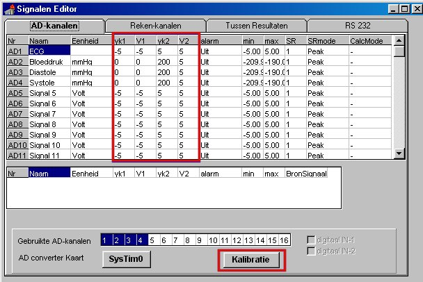
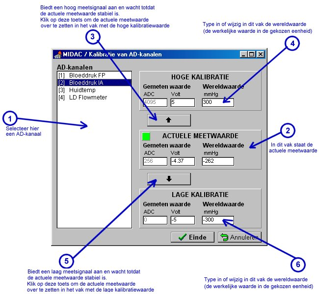

RF 2, Kalibratie
Voorheen werd voor de term afregeling onterecht de term kalibratie gebruikt.
De afregeling van een signaal geeft binnen Midac, door middel van 2 punten een relatie tussen de echte wereld-waarde en de spanning aan de ingang van de AD-converter (c.q. de AD-waarde). Kalibratie is het verifiëren van de afregeling met behulp van zeer nauwkeurig gekalibreerde meetapparatuur, waarbij het kalibratie pad van het gebruikte meetapparaat traceerbaar moet zijn tot op de bron.
Tegenwoordig zijn de meeste sensoren zo stabiel, dat slechts een éénmalige afregeling noodzakelijk is (meestal wordt deze al uitgevoerd door de Instrumentele Dienst bij aflevering). Enkele sensoren hebben wel een goed gedefiniëerde versterking maar een slecht gedefiniëerd (en variërend) nulpunt (bv. disposable druksensoren).
Daarnaast kunnen rekenfuncties in principe zelf hun afregeling bepalen aan de hand van de afregeling van de ingangssignalen.
Midac speelt op deze tendensen in, door te streven naar:
Kortom, afregeling zal steeds eenvoudiger worden en in de toekomst zeker niet meer via de ingewikkelde signalen-tabel verlopen.
Voorbeeld 
Met functie 54 kan een arteriële bloeddruk-golf worden geanalyseerd, de functie berekent diastolische druk, systolische druk, MAP, HR en nog enkele meer technische signalen. De functie haalt de afregeling voor de diverse drukken uit de afregeling van het ingangssignaal. Dus verandert de afregeling van de bloeddrukgolf, dan reageren de uitgangen van functie 54 op de juiste wijze mee.
Tevens toont functie 54 een venster, waarin de druk-waarden numeriek worden weergegeven, maar waar bovendien een knopje opzit om de bloeddruk-sensor te nullen. Door op dit nulknopje te drukken wordt het ingangssignaal (de bloeddruk-golf) genuld en alle daarvan afgeleide signalen worden eveneens van de gewijzigde afregeling voorzien.
Druk op het bedieningspaneel van MIDAC op de knop Signalen (  ).
).
Het venster "Signalen Editor" komt dan op het scherm, bestaande uit meerdere tabbladen. Op tabblad AD-kanalen worden alle gegevens van de ingestelde AD-kanalen in een tabel weergegeven, inclusief de kalibratieparameters. Die zijn in onderstaand voorbeeld van de Signalen Editor rood omkaderd. De kalibratieparameters staan in 4 kolommen met van links naar rechts de headers Yk1, V1, Yk2, V2.
Yk1: in deze kolom staat de wereldwaarde (in de gekozen eenheid) van het lage kalibratiesignaal.
V1: hier staat de meetspanning (op het betreffende AD-kanaal in Volt) die overeenkomt met wereldwaarde Yk1.
Yk2: in deze kolom staat de wereldwaarde (in de gekozen eenheid) van het hoge kalibratiesignaal.
V2: hier staat de meetspanning (op het betreffende AD-kanaal in Volt) die overeenkomt met wereldwaarde Yk2.
Wanneer de kalibratiegegevens voor AD-kanalen bekend zijn, dan kunnen ze direct in de tabel ingevoerd worden.
In de onderstaande tabel kan bijvoorbeeld bij AD-kanaal AD3 (met signaalnaam Diastole en eenheid mmHg) worden afgelezen dat een meetspanning van 0 Volt op het AD-kanaal overeenkomt met 0 mmHg en dat een meetspanning van +5 Volt op het AD-kanaal overeenkomt met 200 mmHg.

Er kan ook gebruik gemaakt worden van het Kalibratievenster.
Druk hiervoor op de knop Kalibratie op het venster Signalen Editor. Die knop is in bovenstaande figuur rood omkaderd. Het venster voor de kalibratie van AD-kanalen verschijnt op het scherm.

1) Selecteer in het linker vak "AD-kanalen" het analoge kanaal dat gekalibreerd moet worden.
2) Het analoge kanaal wordt nu voortdurend bemonsterd. In het vak "Actuele meetwaarde" staat de actuele meetwaarde van het geselecteerde AD-kanaal als ADC-waarde (in het vakje "ADC") en als spanningswaarde (in het vakje "Volt").
Ook staat hier de berekende werkelijke waarde (de wereldwaarde) van het AD-kanaal, dus in de gekozen eenheid. Hierbij wordt gebruik gemaakt van de inhoud van de vakjes "Wereldwaarde" in de vakken "Hoge kalibratie" en "Lage kalibratie".
3) Bied een hoog signaal aan op de versterkermodule die het geselecteerde AD-kanaal als uitgangskanaal heeft. Bijvoorbeeld: biedt op een temperatuur-versterkermodule, waarvan het AD-kanaal gekalibreerd moet worden, een temperatuur aan van 40 graden Celcius door de temperatuuropnemer in een waterbad met die temperatuur te leggen (controleer dat met een betrouwbare meetthermometer). Wacht totdat de weergegeven getallen in het vak "Actuele meetwaarde" een stabiele waarde hebben bereikt en druk dan op de knop met de pijl omhoog om de actuele meetwaarde over te zetten in het vak "Hoge kalibratie". Vul in dat vak onder "Wereldwaarde" de werkelijke waarde in van het gemeten AD-kanaal. Dus in genoemd voorbeeld: 40 (de waarde die de meetthermometer aangeeft).
4) Bied een laag signaal aan op de versterkermodule die het geselecteerde AD-kanaal als uitgangskanaal heeft. Om bij het voorbeeld van punt 3 te blijven: leg de temperatuuropnemer in een waterbad met smeltend ijs (temperatuur nagenoeg 0 graden Celcius) en wacht ook nu totdat de weergegeven getallen in het vak "Actuele meetwaarde" een stabiele waarde hebben bereikt. Druk dan op de knop met de pijl omlaag om de actuele meetwaarde over te zetten in het vak "Lage kalibratie". Vul in dat vak onder "Wereldwaarde" de werkelijke waarde in van het gemeten AD-kanaal. Dus in genoemd voorbeeld: 0 (de werkelijke gemeten temperatuur).
OPMERKING 1: De spanningswaarde van het meetpunt voor de de hoge kalibratie en de lage kalibratie moet minimaal 0,5 Volt verschillen. Er verschijnt een scherm met een foutboodschap wanneer dat niet het geval is.
OPMERKING 2: Wanneer de spanning van de meetwaarde voor de hoge kalibratie en/of de lage kalibratie bekend zijn, kunnen ze ook direct ingetoetst worden in de vakjes 'Volt'. Ook dan geldt dat de spanningswaarde van het meetpunt voor de de hoge kalibratie en de lage kalibratie minimaal 0,5 Volt moet verschillen.
5) De kalibratie van het geselecteerde AD-kanaal is hiermee voltooid.
Herhaal bovenstaande punten voor alle andere AD-kanalen die gekalibreerd moeten worden.
6) Druk tenslotte op de knop "Einde" om de nieuwe kalibratiegegevens op te slaan en te gebruiken. Het kalibratievenster verdwijnt en de nieuwe kalibratieparameters staan in de tabel op de Signalen Editor.
OPMERKING: Druk op de knop "Annuleren" wanneer de oorspronkelijke kalibratiegegevens bewaard moeten blijven. LET OP ! De nieuwe kalibratiegegevens gaan dan verloren !